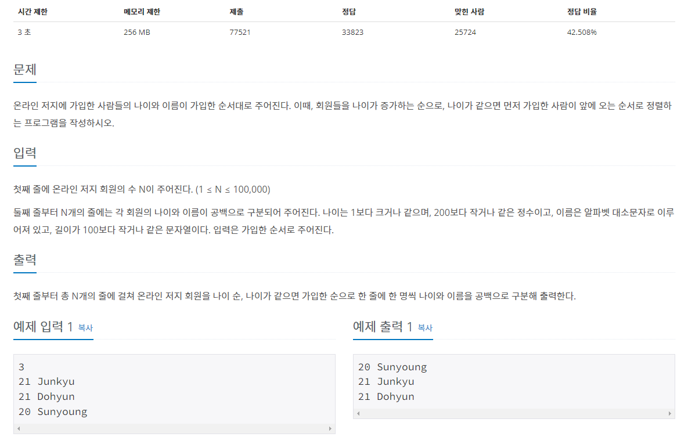

#INFO
난이도 : SILVER5
문제 유형 : 정렬
출처 : 10814번: 나이순 정렬 (acmicpc.net)

#SOLVE
문제에서 주어진 정렬 조건은 다음과 같다.
1. 회원들의 나이가 증가하는 순으로 정렬한다.
2. 나이가 같으면 먼저 가입한 사람이 앞에 오는 순서로 정렬한다.
2번 조건이 없었다면 pair 만으로 해결할 수 있었겠지만, 먼저 가입한 사람의 순서를 파악하기 위해서 C++ STL의 tuple과, sort 정렬함수를 사용했다.
vector<tuple<int, string, int>> info;
// 1st int : 나이
// 2nd string : 이름
// 3rd int : 가입 순서
tuple은 pair의 확장 버전이라고 생각하면 되는데, 3개 이상의 자료형을 하나로 묶어 사용할 수 있다.
따라서 tuple의 세번째 자료형으로 가입한 순서를 나타내는 인덱스를 추가한 뒤, sort 함수에 나이, 가입 순서를 기준으로 정렬하는 compare 함수를 첨가해 문제를 풀이했다. about tuple
bool compare(const tuple<int, string, int>& t1, const tuple <int, string, int>& t2){
if(get<0>(t1) == get<0>(t2))
return get<2>(t1) < get<2>(t2);
return get<0>(t1) < get<0>(t2);
}#CODE
#include <iostream>
#include <vector>
#include <string>
#include <tuple>
#include <algorithm>
using namespace std;
bool compare(const tuple<int, string, int>& t1, const tuple <int, string, int>& t2){
if(get<0>(t1) == get<0>(t2))
return get<2>(t1) < get<2>(t2);
return get<0>(t1) < get<0>(t2);
}
int main(){
vector<tuple<int, string, int>> info;
int n;
cin >> n;
info.resize(n);
for(int i = 0; i < n; ++i){
cin >> get<0>(info[i]) >> get<1>(info[i]);
get<2>(info[i]) = i;
}
sort(info.begin(), info.end(), compare);
for(int i = 0; i < n; ++i)
cout << get<0>(info[i]) << " " << get<1>(info[i]) << '\n';
return 0;
}